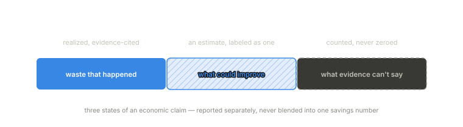

AI spend is usually reported as a provider bill, a token chart, or a budget variance. Those views show that money was spent. They cannot show why.
During execution, cost is a series of decisions. A route selects a provider and model. A cache misses. A request grows because retrieved context was added. A provider times out and a fallback path advances to a different model. A caller retries. A tool call fails and the agent asks the model to recover. Each event changes the economics of the workflow, and the invoice is the last artifact in the chain rather than an explanation of it.
Economic forensics is the discipline of explaining AI spend through runtime evidence. It treats cost as the financial surface of execution behavior, and it holds every economic claim to the standard set in Paper 1: cite the evidence, state the basis, preserve the unknowns.
A provider bill can show token volume by model. It will not show that 18 percent of a workflow’s spend came from a fallback chain after one provider started timing out. It will not show which failed attempts had unknown billing because the provider returned no usage data. It will not show that “unattributed” traffic came from missing workflow context rather than a real product line. Explaining any of that requires evidence from the runtime path, where the cost-producing behavior happened.
The proof rules

Observed results and modeled opportunities never merge. Savings that were actually realized are reported separately from estimates of what could be improved. One blended “savings” number is how cost reports become fiction.
Unknown is counted, never zeroed. Missing pricing, missing usage, missing attribution — each is reported as unknown, with the reason. A report that quietly zeroes its gaps overstates its own coverage.
Waste is classified by the behavior that caused it, not by billing category: retry amplification, fallback tax, duplicate inference, context bloat, abandoned branches. Naming the causing behavior is what makes a finding actionable by engineers instead of merely visible to finance.
Where FinOps fits
FinOps stays necessary: budgeting, allocation, forecasting, accountability. It starts from infrastructure resources, and AI inference moved part of the cost center into per-request execution decisions — a workflow branch, a fallback target, a retry loop. Those units do not map to a cloud resource tag. Economic forensics is the missing layer between runtime behavior and financial management: it creates the evidence FinOps can use without turning FinOps into guesswork.
Economic forensics does not make every dollar perfectly explainable. It makes the explanation and its limits explicit.
The full paper
Paper 2 develops the discipline in depth: what an economic claim must cite to be trusted, how observed and modeled findings are kept apart in practice, the waste classes and what distinguishes them, how assessment reports work as evidence-citing artifacts, a worked reference scenario, and failure modes when spend is managed as a billing problem alone. The full paper is available to teams we work with — what we publish and what we gate.
Next: Paper 3 — Evidence Graphs, the structure underneath both disciplines.